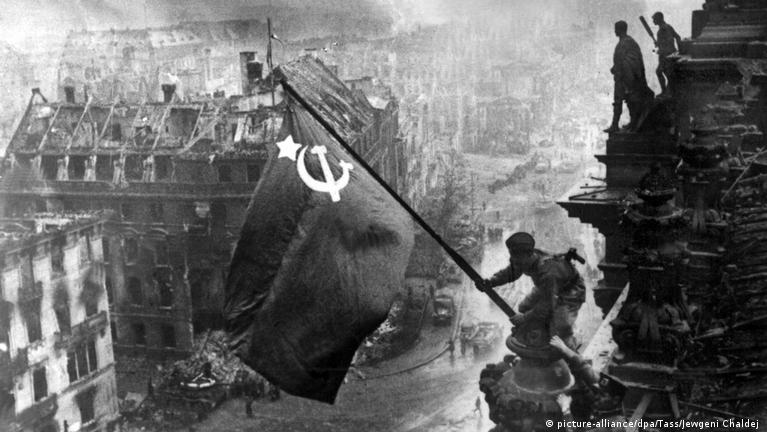

Consecintele razboiului
Afli cum razboiul a schimbat harta politica a lumii si a afectat milioane de oameni.
Al Doilea Razboi Mondial (1939–1945) a reprezentat cel mai devastator conflict din istoria omenirii. Odata cu incetarea ostilitatilor, milioane de oameni din intreaga lume s-au confruntat cu provocarea uriasa de a reconstrui viata de zi cu zi pe ruinele lasate de razboi.
Aceasta perioada de reconstructie a transformat profund societatea europeana si mondiala, dand nastere unor noi ordini politice, economice si sociale care au modelat lumea moderna.

| Rol | Nume |
|---|---|
| Profesor coordonator | Numele Profesorului |
| Elev | Pavăl Ciprian-Vasilică |
Afli cum razboiul a schimbat harta politica a lumii si a afectat milioane de oameni.
Descoperi cum traia populatia civila in perioada de reconstructie de dupa conflict.
Inveti fapte surprinzatoare despre aceasta epoca care a transformat lumea moderna.
Perioada de dupa al Doilea Razboi Mondial a reprezentat una dintre cele mai dificile, dar si mai transformatoare epoci din istoria omenirii. Din cenusa razboiului au rasarit noi institutii internationale, noi valori si o dorinta colectiva de pace si prosperitate care continua sa ne ghideze si astazi.